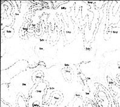
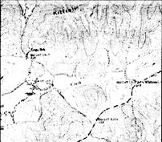
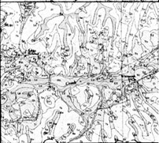
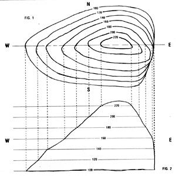

Yes, folks, the government sometimes does work for the little guy . . . and many of us don't realize just how helpful Uncle Sam can be, especially to people who need information about land. Whether you're looking at a tract you'd like to buy or evaluating different ways of using some acres you already own, governmen tissued maps can be invaluable in helping you make informed decisions.
Of course, anyone who's examining a prospective tract of land or planning a new project on his or her spread is bound to have a lot of questions. Such an individual will perhaps want to know how the acreage was used in the past . . . or what minerals are present in the soil and what crops it will support successfully . . . or the location of favorable sites for a well or a solar dwelling . . . or the area's average rainfall, temperature range, and frost dates. Well, those (and many other) vital statistics can be easily obtained at very low cost-sometimes even free of chargefrom good old "Big Brother" himself. All you have to do is learn how to use the various technical maps that government offices can provide.
A LONG-DISTANCE LAND SEARCH
MIDDLE: Geologic mops (which con
be ordered from .State geologic
surveys) arc drawn on top of topo
charts to show an area's rock formations.
BOTTOM: The soil survey mop which
is usually offered with
an accompanybooklet, by the Soil
Conservation Service-will tell you
what types you can expect to find on
the land.
You may be better able to use maps to answer your own questions if you know how I took advantage of this form of lowcost assistance. About two years ago, my wife and two children and I decided to buy several acres in Tennessee and to do so while living in Florida! As you might expect, purchasing land in one state while residing in another presents some unique problems . . . so we were glad to enlist the government's service.
After the family returned to Florida, following a somewhat hectic four-day sweep through selected areas of our future home state, we thought we'd found our dreamed-of piece of Mother Earth . . . but we simply weren't sure. Doubts about the acreage kept popping up in our minds, and we felt that our short tour of the parcel hadn't provided us with all the facts we should know before making a decision.
Our first step, then, was to write for a map of the whole area surrounding our property-to-be. (Since we had passed through the county seat on a weekend, we hadn't been able to get one at that time.) Road maps are usually distributed free by county governments, or you might be able to secure one-for a small charge-from the Chamber of Commerce serving the area in question. Then we went on to acquire a complete set of topographic, geologic, and soil survey maps for that particular tract. Eventuallyafter we learned how to read and interpret all the documents we receivedwe gained an intimate knowledge of the acreage we were considering, and by the time we returned to Tennessee two months later to close the land sale, we knew our spread inside and out!
MAP BASICS
You don't have to be a trained cartographer to decipher topographic and geologic maps. In fact, you need only a few simple skills . . . most of which you probably learned in your sixthgrade geography class. North, of course, is always at the top of the map as you hold it straight in front of you, with the other directions at the corresponding positions on the sheet: south to the bottom, east to the right, and west to the left.
The scale-which is usually noted in a margintells you how many miles (or feet) are represented by each inch on the map. There's also a legend that explains the symbols, numbers, or color shadings used on the diagram. It's wise, too, to look for the date on which the map was drawn and/or revised . . . since streambeds do shift, and roads and buildings come and go.
In short, all the information you'll need will be right there in print. You'll just have to use your imagination to translate that one-dimensional picture into an image of the actual landscape.
Now that sounds easy, I know, and it will seem to be so . . . until you unfold a topographic map for the first time.
Believe it or not, though, that confusing swirl of lines, blotches, dots, and numbers (which will tend to bewilder you at first) can actually convey a great deal of important information to any future-or present-landowner who knows how to read it.
TOPOGRAPHIC MAPS
A topographic map is no more (or less!) than an accurate and detailed representation of a specific portion of the earth's surface. It indicates streams and springs, lakes, roads and trails, buildings, wooded areas (these are shown in green), and-most important of all-the actual contour of the land. With its distinctive curving lines, the "topo" map (as it's commonly called) manages to produce a three-dimensional picture on a flat surface. To understand this, think of the topographic layout as a view from above . . . looking straight down on a piece of property's peaks, valleys, and slopes. The rise and fall of the landscape is represented by the map's curving lines. (In fact, cartographers commonly draw or update these maps with the help of high-resolution aerial photographs . . . but only do so after making or consulting a detailed ground survey.)
The topographic contour lines portray elevation intervals of 10 or 20 feet, so the map reader can figure not only how high the land is, but also how gradually-or steeply-it slopes. For example, in Fig. 1 (a typical ridge) the wide spacing of the lines on the south and southwest faces of the land mass indicate a gentle downward incline. The contour lines on the cast side, however, are so close together that the map reader can deduce the presence of a cliff . . . and Fig. 2, which is a ground-level view of the same piece of land, proves the point.
Once you have a clear understanding of how to read a topo map, you can learn lots of useful facts about your land. The information can help you decide where to erect buildings and plant crops . . . by showing each prospective site's steepness, directional exposure, erosion patterns, and soil drainage. It's best to use a "7 1/2-minute series" map, which will provide the greatest detail among those types commonly available. (The scale of such a drawing is 1:24,000, meaning that every inch on the map equals 24,000 surface inches, or 2,000 feet.)
You can usually order a topographic map from the Division of Geology in the state where your acreage is located . . . but you may have to request an index first, to help you figure out exactly which sectional map (or maps) will cover your land. We simply wrote to the state capitol building in Nashville, Tennessee and received an index to topographic maps for 25 cents. The full-sized topo chart we ordered later cost us $1.25. (EDITOR'S NOTE: Charges for topographic indexes and maps vary from state to state Thedocuments are often for salt, in office supply awl backpacking stores, too.
SOIL SURVEY MAPS
After you've become familiar with the lay of your land, you'll probably want to learn something about the composition of its earth . . . and that's when a soil survey map can come in mighty handy. Offices of the USDA's Soil Conservation Service are located in most county seats (as well as, sometimes, in other large towns), and the folks there will provide you with information on the type of soil that's found on your acreage. In some cases, you can simply write to the office and receive a free information packet (as we did), but many states haven't completed their surveying yet. If that's the case, you'll have to stop by the building to look at preliminary maps. You might also find a reference copy of the county soil survey in the public library.
The package we received contained a comprehensive set of four maps covering every quadrant of the particular county we were interested in . . . Plus a book that explained the symbols used and described the different soil varieties found in the region. Most soil survey maps are about 32" X 38", and they look something like topographic maps. (In fact, soil survey markings are sometimes printed right on top of the same aerial photographs used when making topo maps.) Instead of contour lines, however, an "earth map" shows the irregular outlines of each soil group.
The copies we received further differentiated among the various types by using a system of color coding. Each soil "family" is also identified by its own letter designation and examined in detail in the booklet accompanying the map. By consulting both references, then, you'll be able to find out how the soil was formed, what nutrients it contains, what its physical characteristics are, andprobably most important for your purposes-what crops it's best suited to support . . . along with any special cultivation requirements it may have and climatic data for the area. In addition, you can even learn what trees are likely to be found on your land, and many soil surveys will actually tell you what agricultural crops have been grown there in the past!
GEOLOGIC MAPS
If you plan to develop any water sources or build with native stone on your land, a geologic map can be an invaluable tool. The fact that such a chart can usually be had for just a dollar or two makes it a wise investment. The geologic map uses as its base a topographic drawing, complete with contour lines and elevation markings (although the colors are usually omitted), plus a system of dotted lines and letter symbols to represent the rock formations in the area. It will also indicate any mineral deposits that might be hiding underground.
Before you even begin to search for a likely well site, you can use a geologic map of your land to locate porous rock formations-such as sandstone or timestone-that might hold precious water. You may also want to know what kind of stone you might expect to find that could be used as a building material. Geologic maps are available through the Geological Survey of most states. We contacted the Geologic Office in Nashville, and found that we could order a map of the area we were interested in for only 25 cents! (EDITOR'S NOTE: Again, such prices can vary greatly. In MOTHER's home state of North Carolina, for example, a geologic map is sold for anywhere from $2.00 to $5.00.)
A FANTASY COME TRUE
Although some folks might consider it a real burden to study and interpret the specialized maps I've mentioned here, we found it really easy-and rather exciting-to familiarize ourselves with our piece of land this way. (And it may be the only way to do it, if you live too far from the acreage to make a series of firsthand inspection trips.) Furthermore, poring over a collection of strange, seemingly indecipherable maps can be sort of like visiting your own fantasy land . . . except that when you finally do get a chance to walk the turf, your "on-paper" vision will be transformed into an earthy reality!
|
 |
 |
 |
|
 |
|
|